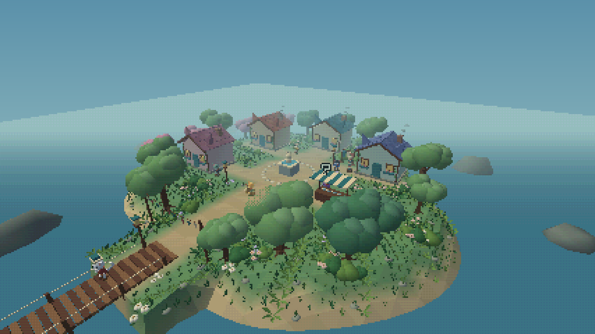
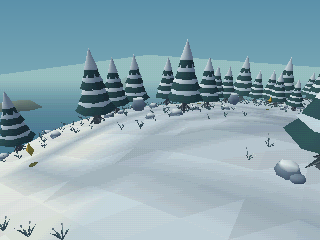
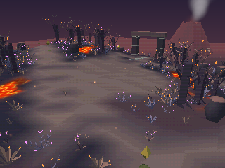
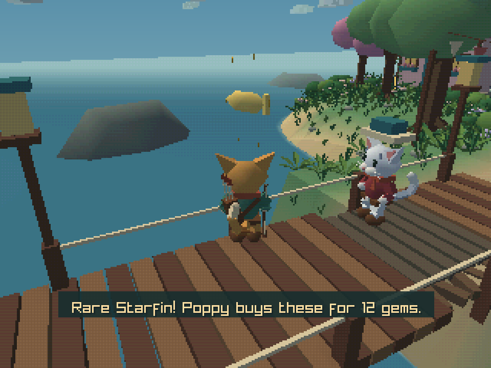

Glowing mushroom forest
Glowing mushroom forest
 Autumn islands
Autumn islands


A village by the sea

Snow-covered shores

Volcanic ruins

A little time for fishingA retro 3D adventure starring a little warrior cat. Explore ten procedurally generated islands, collect golden crystals, and take on goblins and bigger foes with sword and bow. Customize your cat or practise in Training.
In development · Windows · Linux · Mac · RG35XX Pro
Builds
Windows
Find Windows builds on our releases page.
View Windows buildsWindows x64 · OpenGL 3.3
Extract the ZIP, then run island64.exe.
Linux
Find Linux builds on our releases page.
View Linux buildsLinux x64 · Ubuntu 22.04 or compatible newer distribution · X11/XWayland · OpenGL 3.3 and ALSA
Extract the tar.gz, then run ./play.sh in a terminal.
Mac
Find Apple Silicon builds on our releases page.
View Apple Silicon buildsFind Intel Mac builds on our releases page.
View Intel Mac buildsmacOS 15+ · OpenGL 3.3
Choose your Mac’s processor. Extract the tar.gz, then open Play.command.
These builds are not notarized. If macOS blocks opening, allow the game in System Settings → Privacy & Security.
ANBERNIC RG35XX Pro · Experimental
Find RG35XX Pro builds on our releases page.
View RG35XX Pro buildsStock ANBERNIC 64-bit firmware / cbepx-me StockOS Mod · OpenGL ES 3.0
Extract the entire handheld ZIP, including Whiskerwild.sh, whiskerwild/ and Imgs/, into Roms/PORTS, then open RA Game → PORTS → Whiskerwild. Menu cover art is included. PortMaster firmware also has a launch path. Read the included INSTALL.txt. Device testing is still needed.